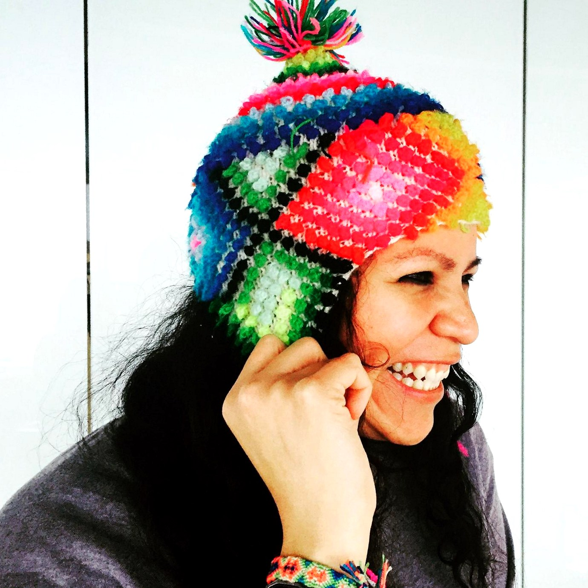

01 / DESCUBRIMIENTO
Ver lo que realmente hay.
Comprender el trabajo, la capacidad, la ambición y el contexto de mercado, y descubrir el valor que se ha vuelto invisible desde dentro.
Ver / Revelar / Destilar
No porque el valor no esté ahí.
Sino porque la historia aún no lo ha alcanzado.
Un enfoque de tres fases. Sacar a la luz lo que ya es valioso. Construir la narrativa a su alrededor. Poner esa narrativa a trabajar.
Comprender el trabajo, la capacidad, la ambición y el contexto de mercado, y descubrir el valor que se ha vuelto invisible desde dentro.
Traducir la complejidad en posicionamiento estratégico y narrativa, sin limar lo que hace que el trabajo sea inconfundiblemente suyo.
Poner la narrativa a trabajar en licitaciones, premios, desarrollo de negocio, liderazgo de opinión, fusiones y adquisiciones, expansión de mercado y crecimiento.
No comunicación por comunicar. Reconocimiento de clientes, jurados, socios, empresas objetivo de adquisición, mercados, tomadores de decisiones y públicos internacionales.
Hacer legible el valor del trabajo para las personas cuya percepción importa.
Pasar de lo que la firma hace, a la razón por la que esa capacidad importa.
Conectar la narrativa con licitaciones, relaciones, visibilidad, crecimiento y nuevos mercados.
Convertir la oportunidad en resultados. Porque el punto no es contar una historia más bonita. Es cambiar lo que sucede después.
No estoy aquí para contar una historia mejor.
Estoy aquí para cambiar cómo el mercado entiende a la firma.
Posicionamiento, arquitectura narrativa, integración de marca, integración tras fusiones y adquisiciones, y sistemas estratégicos que convierten una capacidad compleja en una posición de mercado clara y diferenciada.
Premios, postulaciones, liderazgo de opinión, narrativas para conferencias y sistemas de reconocimiento diseñados para construir credibilidad, fortalecer la autoridad y hacer que la experiencia sea más difícil de pasar por alto.
Narrativas para procesos de selección competitiva que conectan el enfoque técnico, los diferenciadores y las prioridades del cliente en una razón convincente para elegir a su firma.
Los números hablan por sí solos.
Arquitectura · Diseño de Interiores · Planificación y Diseño Urbano · Sostenibilidad · Diseño Basado en Datos · Diseño Paramétrico · Diseño Industrial · Diseño Gráfico · Señalización y Wayfinding · Diseño Gráfico Ambiental
MEPFP · Ingeniería Civil · MODex · Infraestructura · Sistemas Técnicos
Uso Mixto · Hotelería · Multifamiliar · Retail · Entretenimiento Temático · Aviación · Educación Superior · Cívico · Cultural · Municipal · Federal · Salud · Centros de Datos · Espacios de Trabajo
NASA · Amazon · Oracle · Majid Al Futtaim · Brookfield Properties · Grupo Carso · JLL · Marriott International · St. Regis · Grupo Habita · Simon Property Group · Mitsui Fudosan · AEG Europe · New York Public Library

Seguía viendo lo mismo.
El trabajo era más fuerte que la historia que lo rodeaba.
Me encontré con firmas brillantes que hacían un trabajo sofisticado, con capacidades que habían evolucionado más rápido que su manera de hablar de ellas.
A veces la experiencia estaba enterrada dentro de la organización. A veces una adquisición había transformado lo que una firma podía hacer, pero no aquello por lo que el mercado la conocía. A veces el trabajo era extraordinario, y la historia simplemente no lo había alcanzado.
Llevo más de 18 años dentro de firmas de arquitectura, ingeniería y diseño —primero como arquitecta y luego como estratega—, con formación académica en arquitectura, marca y diseño gráfico. Esa combinación me coloca en ambos lados de la mesa: lo bastante cerca del trabajo para entenderlo y saber cómo se hace, y lo bastante lejos de la práctica cotidiana para distinguir lo que a quienes están dentro les queda demasiado cerca para ver.
Sharon Aurelio Studio nació de esa brecha.
Por eso no empiezo por juzgar la historia. Empiezo por entender el trabajo. A partir de ahí, saco a la luz lo que ya es valioso, construyo la narrativa a su alrededor y la pongo a trabajar: no suavizada en lenguaje de marketing, sino posicionada con la claridad suficiente para que las personas indicadas la reconozcan.
El objetivo no es que su trabajo suene a marketing. Es que el valor del trabajo sea imposible de pasar por alto.
Usted conoce el trabajo. Yo sé cómo lograr que se entienda.
Para firmas cuya capacidad ha superado a su historia.
Póngase en contacto ↗